のび〜っ！の風景 [梅吉]
梅吉さんの「のび〜っ」のフィニッシュは右の後ろ足をぴーんと後ろに伸ばすんですよね(⌯¤̴̶̷̀ω¤̴̶̷́)✧
なんとかその瞬間を写真におさめようとおかーさんはカメラが熱くなるほど
日々シャッターを切っているのですが・・・
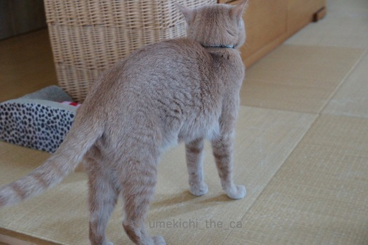
ぐっと力んで〜

上にのび〜っ！
あ、カメラにトラブル発生。急にピントが合わなくなりシャッターが押せません。
のび〜っはいつするか読めないし、一瞬なので構図を決めるのもピントを合わせるのも難しい。
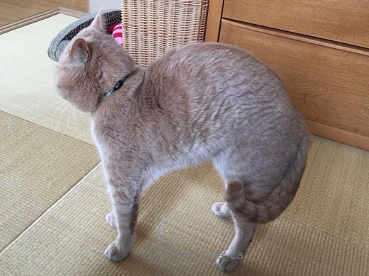
別の日。
チャ〜〜ンス！構図もピントも（私にしては）いいよ〜、と思っていたら
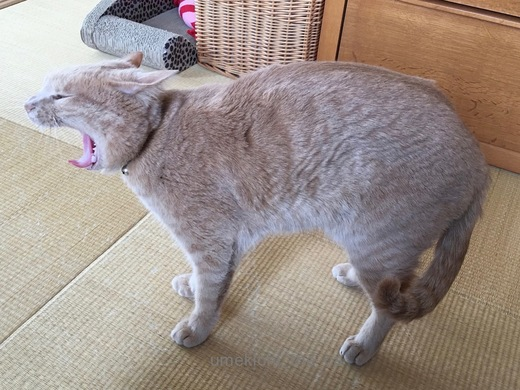
「がお〜ん」とあくびで終了。ああ・・・
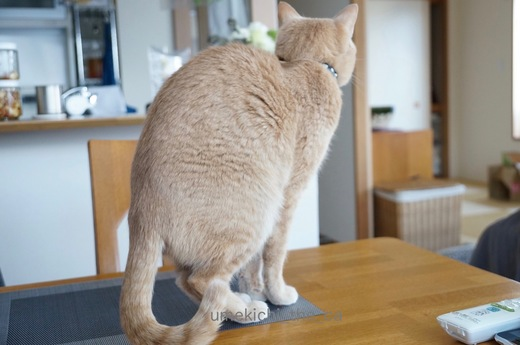
よし。今度はおかーさんの目の前ですね！
（我が家は食事の時以外はダイニングテーブの上にのってもOKなのです。）
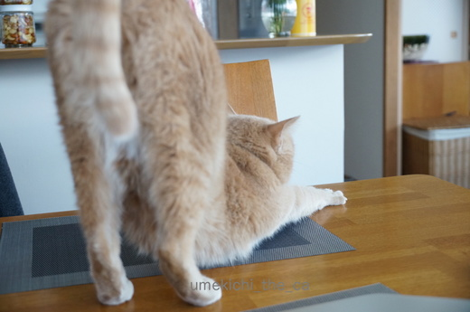
わぁ〜近い、近い！
この後の写真には足だかおちりだか解らないカフェオレ色の物体が写っているのみでした。
梅吉さん、これから足伸ばすよ〜って教えてくれませんか？
 ↑ガブッと一押し↑
↑ガブッと一押し↑
ブラザー・フランシスコ・梅吉が布教にやってきました。
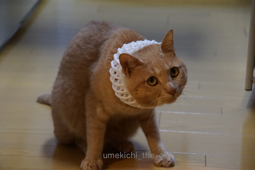
![[猫]](https://blog.ss-blog.jp/_images_e/101.gif) ねこをしんじたほうがええで。
ねこをしんじたほうがええで。
まいにちかりかりだしたらしあわせになれるで。
はいはい。そうですねー。
なんとかその瞬間を写真におさめようとおかーさんはカメラが熱くなるほど
日々シャッターを切っているのですが・・・
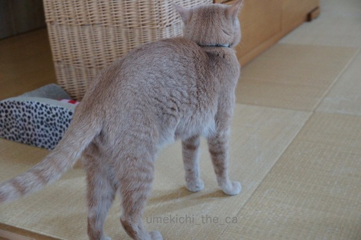
ぐっと力んで〜

上にのび〜っ！
あ、カメラにトラブル発生。急にピントが合わなくなりシャッターが押せません。
のび〜っはいつするか読めないし、一瞬なので構図を決めるのもピントを合わせるのも難しい。
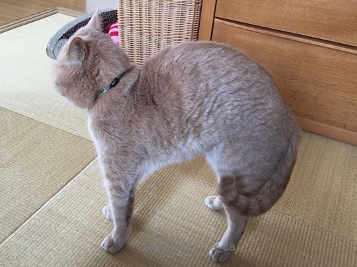
別の日。
チャ〜〜ンス！構図もピントも（私にしては）いいよ〜、と思っていたら
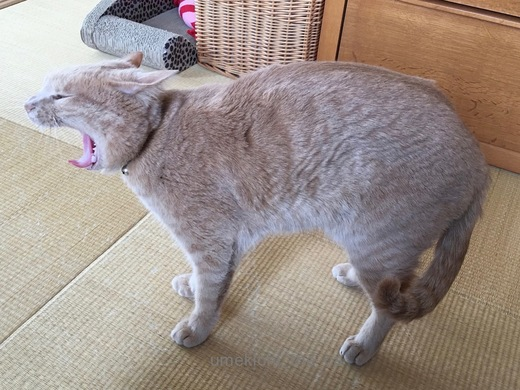
「がお〜ん」とあくびで終了。ああ・・・
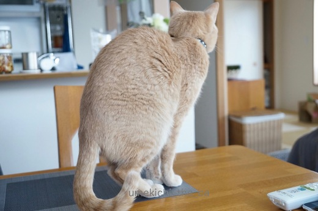
よし。今度はおかーさんの目の前ですね！
（我が家は食事の時以外はダイニングテーブの上にのってもOKなのです。）
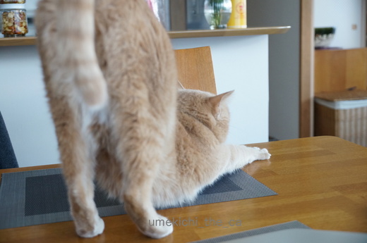
わぁ〜近い、近い！
この後の写真には足だかおちりだか解らないカフェオレ色の物体が写っているのみでした。
梅吉さん、これから足伸ばすよ〜って教えてくれませんか？
ブラザー・フランシスコ・梅吉が布教にやってきました。
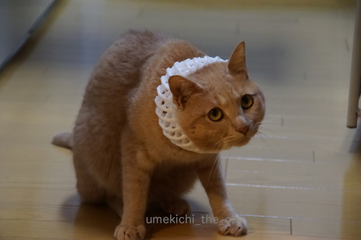
まいにちかりかりだしたらしあわせになれるで。
はいはい。そうですねー。

カフェオレ色の梅吉

梅吉 2023年8月10日 永眠


梅吉と出会った譲渡会

犬猫の理由なき殺処分ゼロ
妄想広告
UMEKICHI 光

爆発的に早い！
時々攻撃的！
Thanks to Mr.Boss365
爆発的に早い！
時々攻撃的！
Thanks to Mr.Boss365

わかりますわかります！！
片足みよ〜んと残して伸ばしてから、すたすた。
どっちの足かはチェックしていませんでした〜。
写真に撮るべくチャレンジしてみます(^^)
男の子は左利きらしいですから、バランス考えると、あんよは反対の右なのかなぁ？？
by も〜 (2017-04-07 11:16)
シャッターチャンス！難しいですよね！
私も撮りたいと思ってカメラを構えますが
すでに遅いし・・・
かといってずっと待っているわけにもいかないですし！
足ピーン姿も見てみたいので
頑張ってくださいね(#^.^#)
by きぃ (2017-04-07 11:18)
まだ幻の足ピーンですね。
シャッターチャンスは大変そうです。
楽しみに待っていますよ。
by kiki (2017-04-07 12:25)
後ろ足、みにょーーーんって伸ばすの
分かりますよーー^^
でも写真に撮るのは至難の業だと思う！！！
いっそ動画にしちゃう？(^ω^)v
前記事の梅吉君の顔
笑っちゃったーーー(笑)
どれもかわいいんだもん♪
by リュカ (2017-04-07 12:57)
も〜さん＞男の子は左利きなんだ_φ(･_･
両足するかな〜と思ってしばらく観察していたのですが
私がみている限りは100%右足。
にゃんこによって違ったりもするのかも。王子の足はどっちかなぁ・・・
きぃさん＞やんちゃとはいえ、幼い頃よりは落ち着いて来たので
撮りやすくなってきています。
Leaちゃんのことを考えると楽勝！でもありますね（＾◇＾）
あ、でも今のLeaちゃんのシャッターチャンスは「白目の寝姿」かも〜(ﾉ≧▽≦)ﾉ
kikiさん＞足ピーンは足先まで伸びて内村航平選手も驚くほどの美しさなんですよ＾＾
みなさんに見てもらえるように頑張らなくっちゃ♪
リュカさん＞先代猫はしなかったので足みにょーーーんは
うちの子だけかと思っていました。
みなにゃん、みにょーーーんしているのね♪
全記事の梅吉の顔、こわかわ、きもかわ、かわかわ(*≧ｍ≦*)
by ちぃ (2017-04-07 13:32)
ブラザー・フランシスコ・梅吉様。私も猫教信者でございまする。
東京に布教活動の折には、カリカリ山ほど寄進させていただきますですよ。
by zombiekong (2017-04-07 13:39)
ネコの伸び見てて気持ちいですよね～個人的には歩きながら片足づつ伸ばすのが好きです(#^^#)右足ピーンってそういうことかな？
で、梅吉くん信者は増えましたか？
by palpal (2017-04-07 14:17)
zombiekongさん＞ああ、やはり信者でしたね！東京にも優秀なブラザーが
多数いる様子・・・
ブラザー・梅吉も安心しております＾＾
東京布教の折にはキャットニップボール祭りに参加してみたいと申しておりますよ(^_-)-☆
palpalさん＞そうそう、２〜３歩踏み出しつつ足びよ〜ん・・・片足づつ？
右足しかしない！なんでだろう・・・・
信者は沢山いるのですが、カリカリ増量の教えが広がらない・・・、と
嘆いておりまする^^;
by ちぃ (2017-04-07 15:34)
梅吉さん、かなり退屈そうですね〜(^^)
by KENT0mg (2017-04-07 15:53)
賽銭でなく、かりかりかぁ…
by yamachan (2017-04-07 19:42)
そうそう、『ニャンコのあのシーンが撮りたい！』と思ってもなかなか撮らせてくれないんですよねぇ(⌒-⌒; )
カメラを構えてると違うポーズをして、ひたすら待って諦めた瞬間にやってくれたり・・・(*_*)
もしかしておちょくられてる？w
by ニッキー (2017-04-07 21:53)
シャッターチャンス、ここぞ！という時に
カメラの電源が入っていないとすごく難しいです～。^^;
by yes_hama (2017-04-07 22:03)
わかります！
伸びはアクビよりチャンスが少ない気が・・・。
三脚立てて動画にしようかと思うこともありますが、なんか負けた気がして写真撮ろうと頑張っちゃいます^^;
梅吉教に入信したら毎日カリカリのお供えが必要みたいですね(*^▽^*)
by ゆきち (2017-04-07 22:29)
そうなんですよ･･･決定的瞬間、どんだけ逃してるか(+_;)
私は、のび〜の姿を正面で撮りたいと、長年思ってるんですけどね･･･
みにゃさま、「これから、のび〜、やりますっ！」って宣言してくれへんやろか。。
ブラザー・フランシスコ・梅吉さま･･･ぼへ公園に布教にきてくださいまし(^.^)
by のらん (2017-04-08 07:50)
KENT0mgさん＞お、分かっていらっしゃる！
寝起きののび〜〜っのあとは遊んで攻撃が始まります^^;
「わし、ねてばっかりでたいくつやったで〜」と伸びをしながら叫んでいるのかも^^;^^;
yamachanさん＞そうそう（＾◇＾）
お財布からカリカリ出てきたりしませんものね〜。
梅吉が来る前は小袋のカリカリを持ち歩いて出会ったにゃんこに
present for youしていたのですが今はやめてます。
なんか後ろめたくって・・・(⌒-⌒; )
ニッキーさん＞諦めた瞬間に狙っていたポーズ！あるあるすぎます〜(≧▽≦)
本当におちょくられているとしか思えません。
無理な姿勢でカメラを構えて肩や腕が痛くなるのもありがちです・・・^^;
yes_hamaさん＞わかります〜！
そんなことがないように電源入れっぱなしにしていたら
シャッターチャンス！！の時にバッテリー切れになったり・・・・(꒦ິ⌑꒦ີ)
ゆきちさん＞動画の方が面白いよね！というもの以外は私も写真に撮りたい派です！
負けたような気、とっても良く解ります〜。
自分の中で「そんな事で諦めるのか！！」と別の声が聞こえてきたり（＾◇＾）
いつかぜったい足のび〜を撮りますとも（・∀・）ﾉ おー
のらんさん＞ああ、のらんさんも逃しまくっていらっしゃる。
正面からというのは更にハードルが高い・・・・
ねこ飼いのみなさん自分に一つ使命を課しているようですな！！
by ちぃ (2017-04-08 11:52)
ノビノビしたら体系大変わりですね！宣教師スタイルいやがっていますね。（笑）
by みぃにゃん (2017-04-08 15:07)
こちらの都合通りにイカナイ！
これぞ、猫様の正しいお姿ですね〜（笑）
弓なりに伸びのお姿、キャワイイです(^^)
そして、ブラザー・フランシスコ・梅吉さま。
ぜひとも、信者にしてくださいまっせ！
by morichan (2017-04-08 22:22)
みぃにゃんさん＞はい(⌒-⌒; )宣教師の印はこのあとすぐ外しました。
morichanさん＞全くもってこちらの思いを裏切ってくれます。
もう、わざとしているとしか思えません〜( ꒪⌓꒪)
そして、その状況をちょっと楽しんでいる下僕の心もわかっている・・・
nice!のぽちっ、は入信の証。
しあわせになれるで。by梅吉
by ちぃ (2017-04-09 08:31)
本当に、のび～ってする前に教えて欲しいですよね(;´∀｀)
右の後ろ足をぴーん・・・ウチのノールとサラもしますよ。
にゃんこの特性なのでしょうか（笑）
ブラザー・フランシスコ・梅吉さま、どうか群馬にも布教活動にいらして下さいませ。
かりかりに焼かつおもお納めさせて頂きますので。
by ひでぷに (2017-04-09 10:19)
ひでぷにさん＞ノールくんとサラちゃんも右足派なんですね♪
見てみたいなぁ＾＾
梅吉の布教活動、焼きカツオなんてもらったら帰ってこなくなりそうです^^;
by ちぃ (2017-04-09 14:11)
シャッターチャンスには後ろ髪がないと言われている…との言葉通り(？)逃すと戻って来ない猫のお宝ポーズ、あるあるですよね。
「今の見たー？」「写真とっときゃよかったー」
この会話が猫飼いの中でどれほど繰り返されたことか。
きっと猫的にも撮られたくないのかと…
by BillK-ko (2017-04-09 18:09)
こんばんは！ひでぷにさんへのブログの本当にお優しいお言葉にキュンとして、お伺いしてしまいました。
何と素敵な色合いの、愛されてノビノビ育まれたハンサム梅吉くんに逢えましたー♡
by Ginger (2017-04-09 23:37)
BillK-koさん＞シャッターチャンスは加トちゃんカツラ並みの髪の量ですね！！
道理でつかめないはずだわ・・・・
のび〜んの足を取るべくおっとと私二方向からカメラを構える日々が
続いているのですが（アホ夫婦）
こちらの気合が入るほど警戒して「あほちゃうか・・・」という顔をする梅吉です^^;
Gingerさん＞コメントありがとうございます♪
ハンサムなんて嬉しいお言葉(≧▽≦)
梅吉は母猫・兄弟猫とはぐれて野原にポツンと一匹でいるところを保護され
我が家にやって来た子です。
その時の梅吉と外猫さんたちの境遇をついつい重ね合わせてしまいます・・・
のびのび育ちすぎてたいへんな甘えん坊でやんちゃ坊主になった梅吉ですが
個性豊かな面白い子なんですよ〜（すいません・・・親バカです^^;）
また梅吉に会いにいらしてくださいね〜。お待ちしております♪
by ちぃ (2017-04-10 14:49)